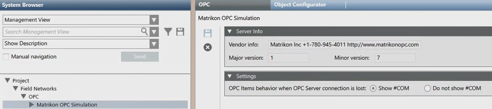

Third-Party OPC Server Workspace
In Engineering mode, when select a third-party OPC server in System Browser imported under an OPC network, in the OPC tab you can view the server info, configure the behavior in case of connection lost (see Modifying the Behavior for Connection Lost), or remove it (see Deleting an OPC DA Client Configuration).


Validation for OPC servers
If an OPC server is subject to validation, you have to provide the password to delete it.